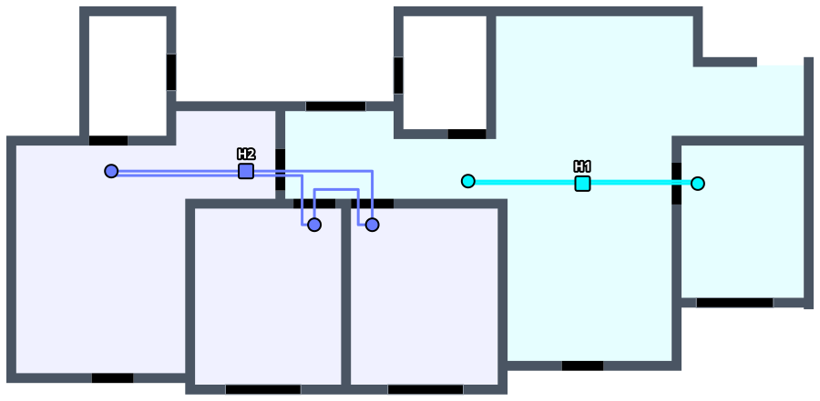
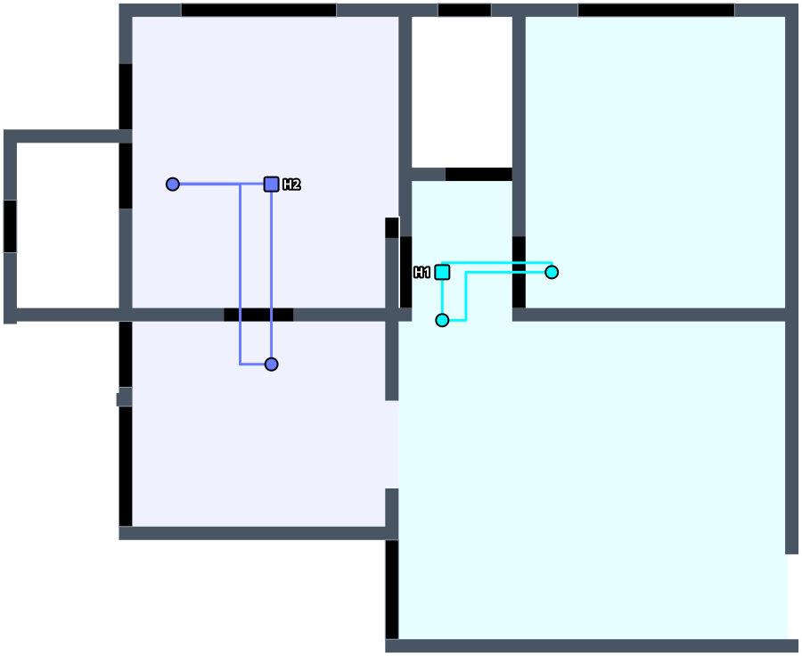
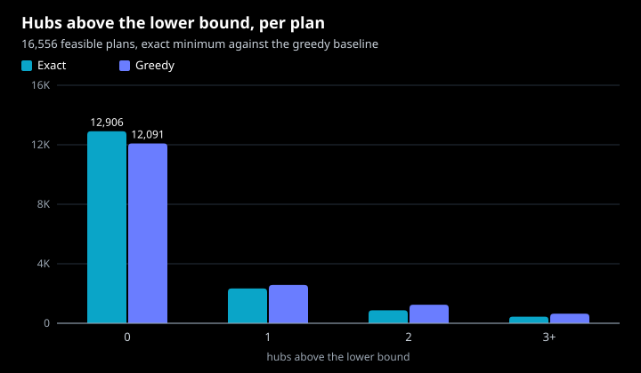
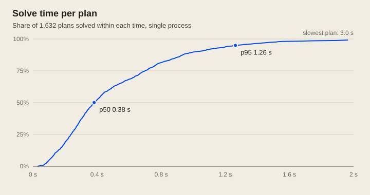
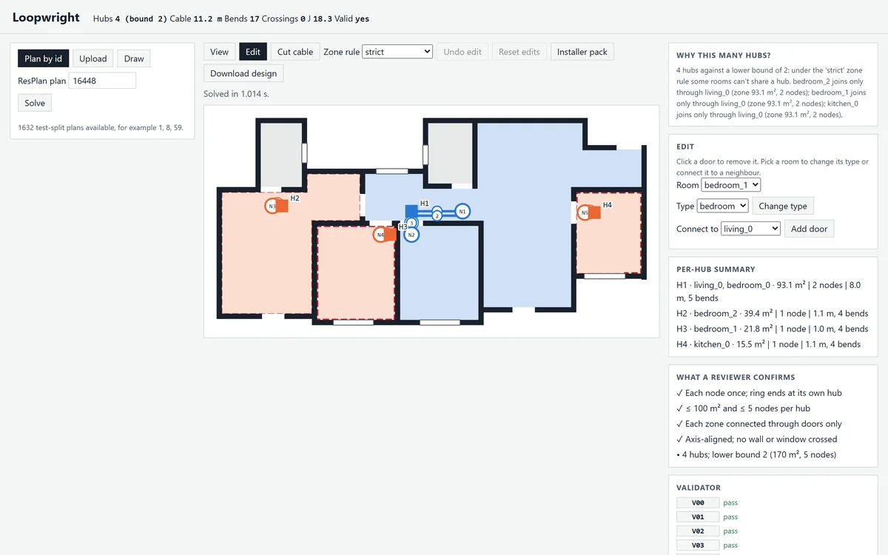
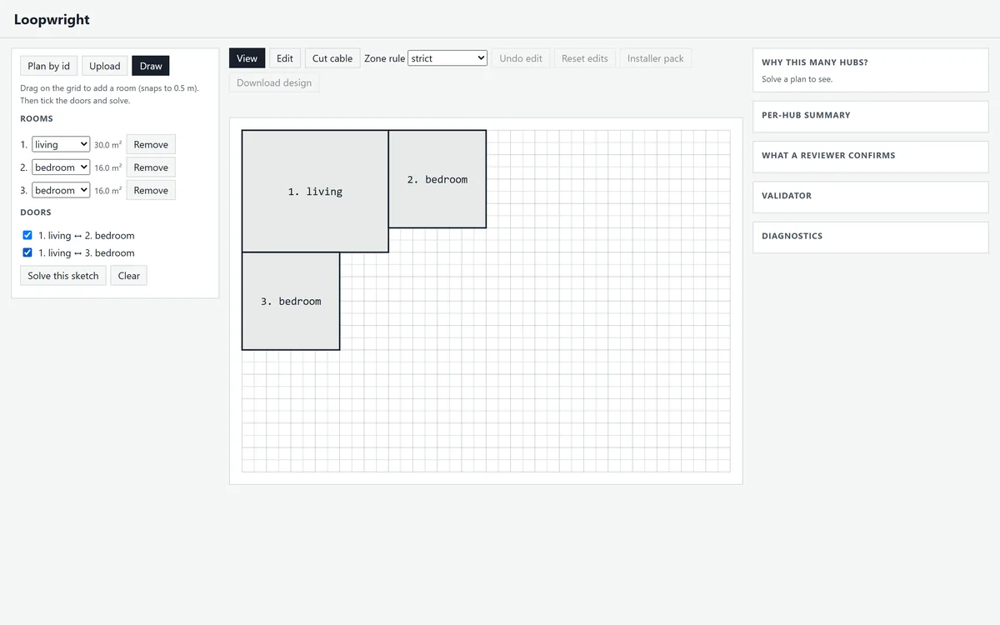

Loopwright plans the network cabling of a home from its floor plan. It groups the rooms into zones, puts one hub in each and runs a single closed ring of cable from that hub through every room in its zone, along the walls and through the doors.
Fig 1Plan 2916, two ringsClick a cable to cut itH1 ring, 42.6 m

Cable on the floorSignalA hub's zoneResPlan plan 2916, built from the solver's own output. A greedy grouping needs 3 hubs; Loopwright finds 2, the lower bound, with 42.6 m of cable. The signal leaves each hub and runs round its ring; cut a leg and it still reaches every socket, the other way round.
The rules every design follows
Each design has to meet all of these. Within them, Loopwright uses as few hubs and as little cable as it can.
Rooms
Every living room, bedroom, kitchen and storage room gets one node. Bathrooms and stairs get none.
Zones
Each hub serves one zone of at most 100 m² and five rooms, joined by doors or open passages.
Rings
Each hub runs one closed ring through its rooms and back, with no branches.
Cable
Runs only horizontally and vertically, changes rooms only through doors and openings, never crosses a wall or a window and stays inside the home.
Ranking
Fewest hubs first. Between designs with as many hubs, the lowest J wins: cable length + 0.3 × bends + 3 × crossings + 2 × overlap, with length and overlap in metres.
How it works
Read the plan
Rooms, walls, doors and windows come from the ResPlan geometry, healed so every wall closes and every door sits in a wall.
Place a node in each room
Each node goes by its room's doors and at least half a metre from any wall, so cable reaches it on short legs.
Find the fewest hubs
An exact search over every way of grouping the rooms into zones finds the smallest number of hubs the rules allow.
Keep the cheapest grouping
Among the groupings with that many hubs, the one whose rings need the least cable wins.
Route every ring
Each ring runs on a grid along the walls and through the doors, with every bend counted. Later legs keep out of lanes cable already uses.
Check the result
A separate validator rebuilds the plan from the raw data and checks 17 rules, V00 to V16. It imports nothing from the solver.
One door rule can double the hubs
In plan 16448 the living room and one bedroom already make a 93 m² zone. The kitchen and the other two bedrooms open only onto the living room. If a zone must be joined by its own doors, each of them needs a hub of its own. Let a zone's cable pass through another zone's room and two hubs are enough, the lower bound, though the rings then need three times the cable.
Loopwright follows the own-doors rule unless told otherwise, and the app switches between the two.
Fig 2Plan 16448, the door ruleSwitch the rule4 hubs, 11.2 m


Hubs
4
Lower bound
2
Cable
11.2 m
J
18.3
Nodes by the doors, legs in their own lanes
Plan 11282 needs two hubs either way. Earlier versions put each node in the middle of its room and let legs run over each other. Now nodes sit beside the doors and every leg keeps a lane of its own. Drag across the model to compare.
Fig 3Plan 11282, before and afterDrag across the modelJ 47.1 to 19.4


BeforeAfter
Before
Cable
23.3 m
Doubled up
10.7 m
J
47.1
After
Cable
15.8 m
Doubled up
0.0 m
J
19.4
Every plan in ResPlan, all 17,000
Each one solved, then checked by the validator. The figures come from the batch records in the repository.
Valid
16,556 of 16,556feasible plans pass every rule. The other 444 each have a room over 100 m², which no zone can hold, and are reported as infeasible.
Hubs
29,377against a lower bound of 23,893, where a greedy grouping needs 31,046. 12,906 plans meet the bound exactly; on the rest, doors or room sizes rule it out, and the app names the reason.
Cable
323,483 min all, for a total J of 446,668, or 27.0 per plan.
Time
0.38 sper plan at the median and 1.26 s at the 95th percentile, in one process on a laptop.
Fig 4

Fig 5

Everything in the app
loopwright serve opens a local app in the browser. Nothing leaves your machine. Each button below opens the app straight in that mode once it is running.
Fig 6Edit mode, plan 16448

Edit a plan, re-solve live
Click a door to remove it, connect two rooms or change a room's type. Every change is solved and checked again at once, so you see what it does to the hubs and the cable. Undo takes it back.
Cut any leg of a ring and the app shows which sockets are still fed one way and which the other, with the longest feed in metres. A single cut never loses a device; that is what the ring is for.
One printable page for the person fitting the cable: the cable schedule with each ring's loop resistance and worst feed after any cut, the bill of materials with slack, a cost estimate and the commissioning sheet.
Open in the appStart the app first with loopwright serve; the pack opens from the Installer pack button.
Fig 9Draw mode

Draw a plan from scratch
Drag rooms on a half-metre grid, pick each room's type, tick the doors between neighbours and solve. Good for trying an idea before there is a drawing.
Bring in a CAD drawing: one closed polyline per room on a ROOMS layer with its type written inside, and a line across each door on a DOORS layer. Units come from the drawing.
A clean, straight-on PNG, JPEG or PDF works too, with its scale: metres per pixel, the PDF drawing ratio or the flat's area. Room types are guesses, so check them in Edit mode.
The first command writes the design as JSON, a drawing, a viewer page and an installer pack; the second runs every check. The settings page lists every rule reading the solver uses.